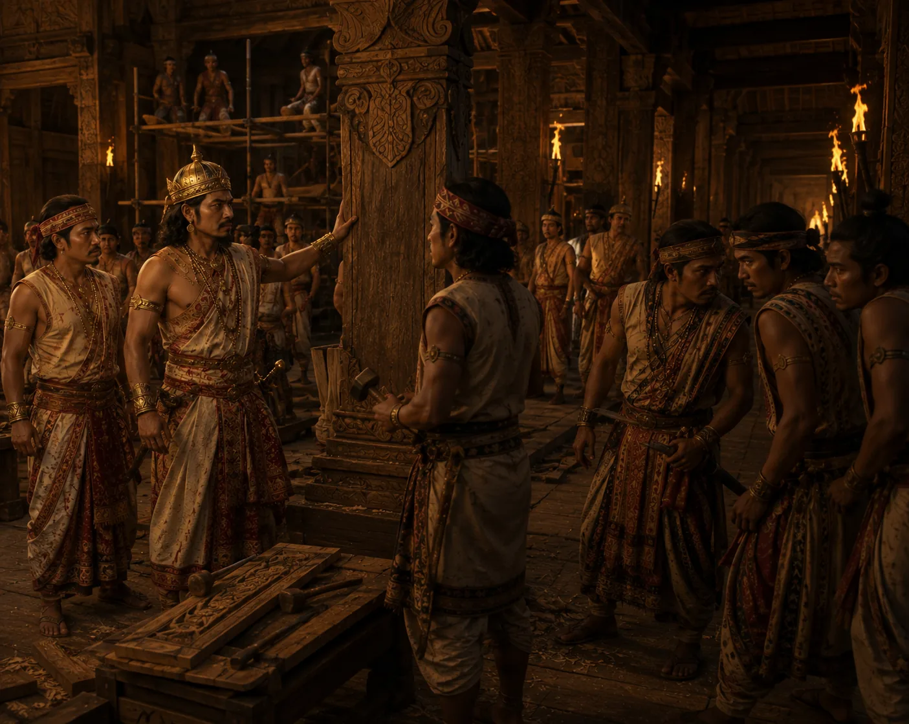

Assassination of King Suhenphaa
1493 · The coming of Sukaphaa

Turung palace laborers conceal weapons and spear King Suhenphaa to death inside the palace under cover of darkness.
People: Suhenphaa
1493 · The coming of Sukaphaa

Turung palace laborers conceal weapons and spear King Suhenphaa to death inside the palace under cover of darkness.
People: Suhenphaa